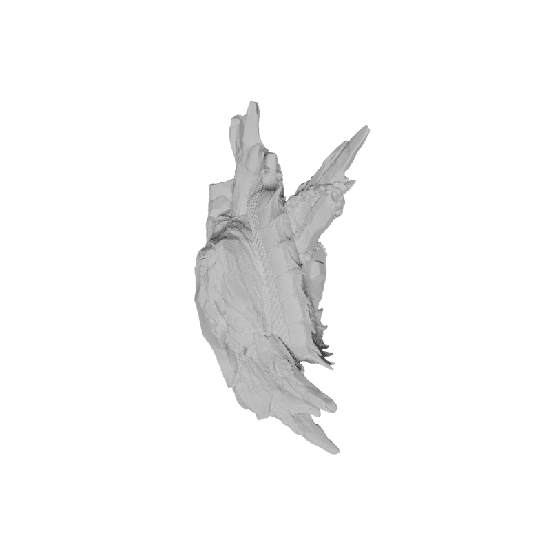
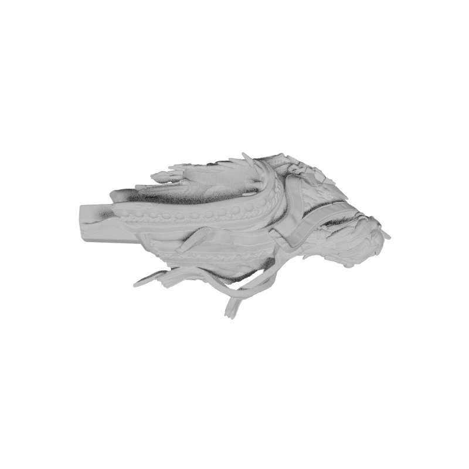
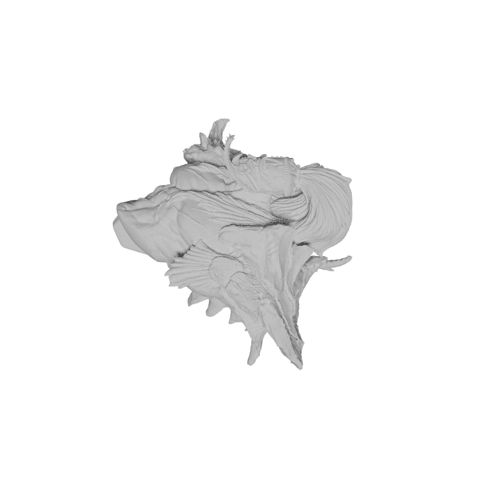

—
back
   sculpt
/skəlpt/
verb
create or represent (something)
by carving, casting, or other shaping techniques.
By a route obscure and lonely,
Haunted by ill angels only,
Where an Eidolon, named NIGHT,
On a black throne reigns upright,
I have reached these lands but newly
From an ultimate dim Thule—
From a wild weird clime that lieth, sublime,
Out of SPACE—Out of TIME.
Bottomless vales and boundless floods,
And chasms, and caves, and Titan woods,
With forms that no man can discover
For the tears that drip all over;
Mountains toppling evermore
Into seas without a shore;
Seas that restlessly aspire,
Surging, unto skies of fire;
Lakes that endlessly outspread
Their lone waters—lone and dead,—
Their still waters—still and chilly
With the snows of the lolling lily.
By the lakes that thus outspread
Their lone waters, lone and dead,—
Their sad waters, sad and chilly
With the snows of the lolling lily,—
By the mountains—near the river
Murmuring lowly, murmuring ever,—
By the grey woods,—by the swamp
Where the toad and the newt encamp,—
By the dismal tarns and pools
Where dwell the Ghouls,—
By each spot the most unholy—
In each nook most melancholy,—
There the traveller meets, aghast,
Sheeted Memories of the Past—
Shrouded forms that start and sigh
As they pass the wanderer by—
White-robed forms of friends long given,
In agony, to the Earth—and Heaven.
For the heart whose woes are legion
’T is a peaceful, soothing region—
For the spirit that walks in shadow
’T is—oh, ’t is an Eldorado!
But the traveller, travelling through it,
May not—dare not openly view it;
Never its mysteries are exposed
To the weak human eye unclosed;
So wills its King, who hath forbid
The uplifting of the fring'd lid;
And thus the sad Soul that here passes
Beholds it but through darkened glasses.
By a route obscure and lonely,
Haunted by ill angels only,
Where an Eidolon, named NIGHT,
On a black throne reigns upright,
I have wandered home but newly
From this ultimate dim Thule.
Fair river! in thy bright, clear flow
Of crystal, wandering water,
Thou art an emblem of the glow
Of beauty—the unhidden heart—
The playful maziness of art
In old Alberto's daughter;
But when within thy wave she looks—
Which glistens then, and trembles—
Why, then, the prettiest of brooks
Her worshipper resembles;
For in my heart, as in thy stream,
Her image deeply lies—
His heart which trembles at the beam
Of her soul-searching eyes.